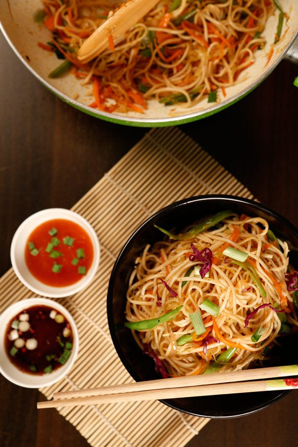

Hakka Noodles Recipe

About Hakka Noodles
Hakka noodles is a popular Indo-Chinese dish of stir fried noodles, veggies and sauces. It is hugely popular in Indian restaurants and street stalls. It is usually eaten on its own or with a side of Manchurian or chilli dishes like gobi manchurian or chilli paneer. Indo-Chinese hakka noodles originated from the Chinese population living in Kolkata, India.
Over the years it has become a favorite among many Indians. Right from the upscale restaurants to the street carts these are one of the most ordered and enjoyed. Hakka noodles are so flavorsome, delicious and have a great crunch that make you crave for more.
Unfortunately, the noodles served in most of these places are loaded with oil and msg that dehydrates us a lot. So why not make these at home.
Ingredients
- 1 tbsp olive oil
- 1 tbsp Ginger, chopped
- 1 tbsp Garlic, chopped
- 1 tbsp Celery, chopped
- 1 medium onion sliced
- Salt to taste
- 1 cup carrot julienne
- 1 cup French beans , sliced diagonally
- 1 cup cabbage, shredded
- 1 tsp chili sauce
- 1 tsp soy sauce
- 1 tsp sugar
- ¼ cup vegetable stock
- ½ tsp crushed black pepper
- 1 pkt Noodles, boiled
- ¼ cup spring onion, cut 2 inch long pieces
Steps
- Heat oil in a wok or a non-stick kadhai, add ginger, garlic and celery. Saute for a couple of minutes until light golden in colour.
- Add the sliced onions, salt and sauté. Let the onion sweat and become soft.
- Now add the chopped vegetables (carrot, cabbage, beans) and sauté.
- Add the chili sauce, soy sauce, sugar and little stock or water. Mix well, cover and cook for a few minutes.
- When the vegetables are half done (do not over cook) add the boiled noodles and toss. Mix the noodles well with rest of the ingredients. Season with salt and pepper.
- Add the spring onion and mix well.
- Serve hot.